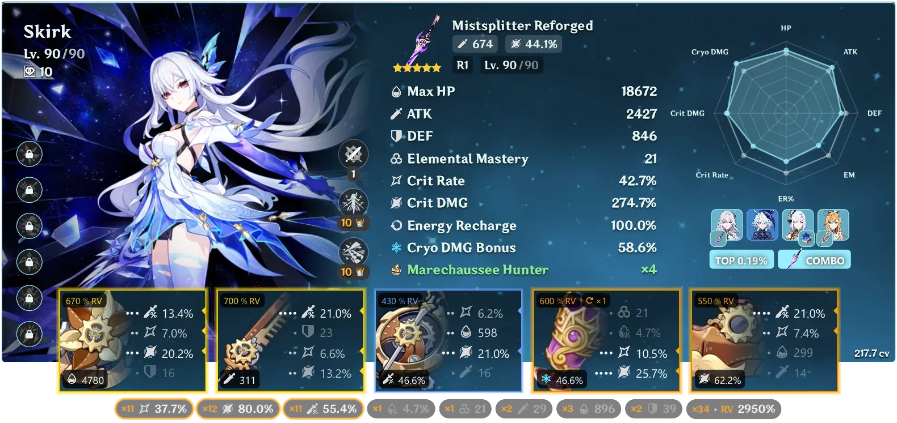
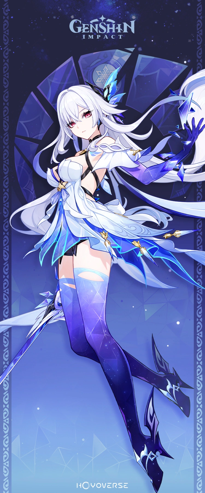

Skirk's Build

Skirk is a main DPS that relies on her ATK%, CRIT RATE, and CRIT DMG to do most of her damage! The artifacts that you would want to use on her depends on if you are using Furina. If you have her on the team, you should be farming Marechaussee Hunter found in Fontaine. If not, you should be running Finale of the Deep Galleries. This is very important for damage because of Furina's fanfare. If you are constantly losing and gaining HP, Skirk's CRIT RATE will go up! If not, Marechaussee Hunter is useless. This does not include getting hit in combat.

Main Affix
- CRIT DMG
- CRIT RATE
- ATK%
- ANY (not needed)
Best Weapons
Finding the right weapon for skirk can be a challenge, especially if you don't have enough primos to pull for her weapon! Sometimes even past character's weapons can also do the trick. Finding the right affix for the weapon can also be overwhelming, especially trying to figure out what the description of it means. Finding the right weapon is also different for each player depending on what you lack in artifacts. Some people may need more CRIT RATE, CRIT DMG, ATK% or even ER in some cases. Here's a list of her top 4 weapons:
- Azurelight
- Haran Geppsku Futsu
- Mistsplitter Reforged
- Primodrial Jade Cutter
More information about Skirk's build and teams can be found below:
Skirk Build